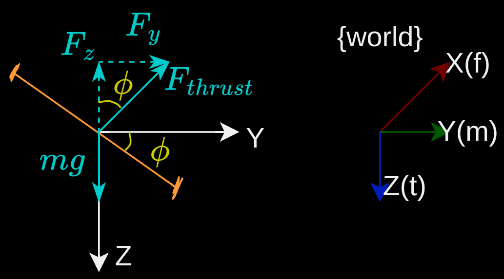
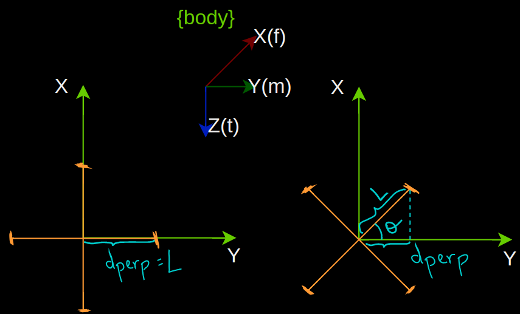
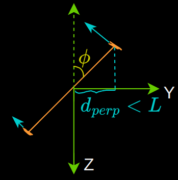

Side view: Drone rolling about $X_W$ at a roll angle of $\phi$ w.r.t. $Z_W$
The thrust vector $F_{thrust}$ can be decomposed into vertical $F_z$ and horizontal components $F_y$ in the directions of the coordinate axis of the world frame. Since they meet at a right angle, trigonometry can be used:
$$\begin{align*}
F_y &= F_{thrust} \cdot sin\phi \\
F_z &= F_{thrust} \cdot cos\phi \\
\end{align*}$$
Moments
Roll
This torque comes from a force that acts perpendicular to the axis of rotation, at some distance from the center of the vehicle.

Top view

Side view of the drone that's tilted by $\theta$ in the $XY$ plane.
Conditions to consider when calculating the magnitude of the torque about $X_W$ i.e. when the drone rolls about $X_W$:
When the body frame is perfectly aligned with the drone:
When ${B}$ is not perfectly aligned with the drone, i.e. the body-frame coordinate system is rotated w.r.t. the drone's arms.
$$
M_x = F_{thrust} \cdot Lcos\theta
$$
$\theta$ represents the angle between $Y_B$ and the drone's arm in the positive $XY_B$ plane, and not the yaw angle $\psi$ caused by a reaction torque.
The coordinate system that is used most often for a quadrotor body frame has the x and y axes pointing half-way between the rotor arms, i.e. at $45^0$; which is the reason why $\sqrt{2}$ is often seen in quadrotor math, since $cos45 = \frac{1}{\sqrt{2}}$.